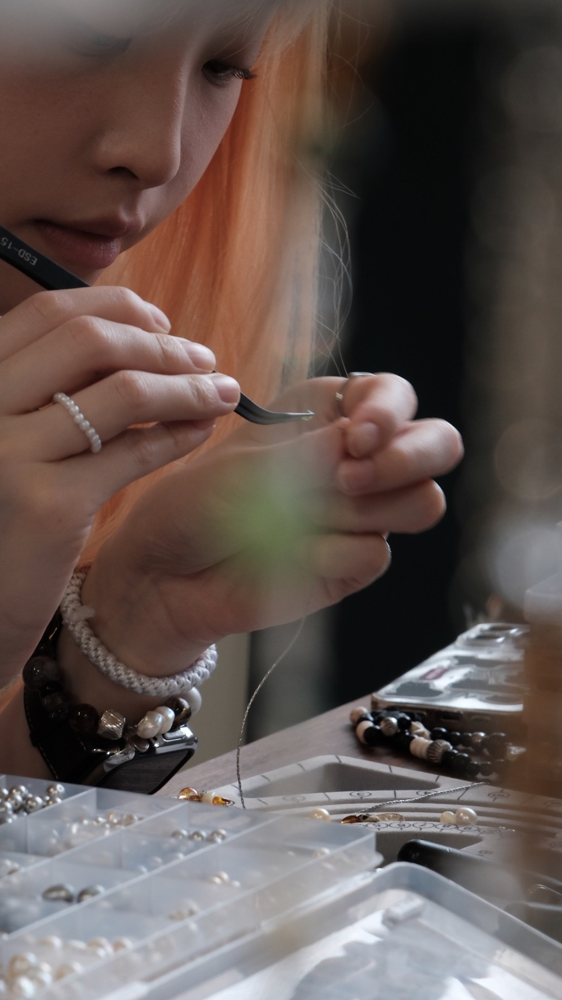
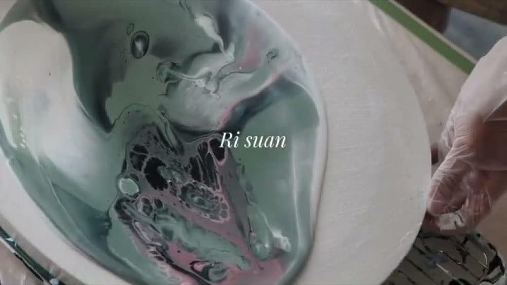
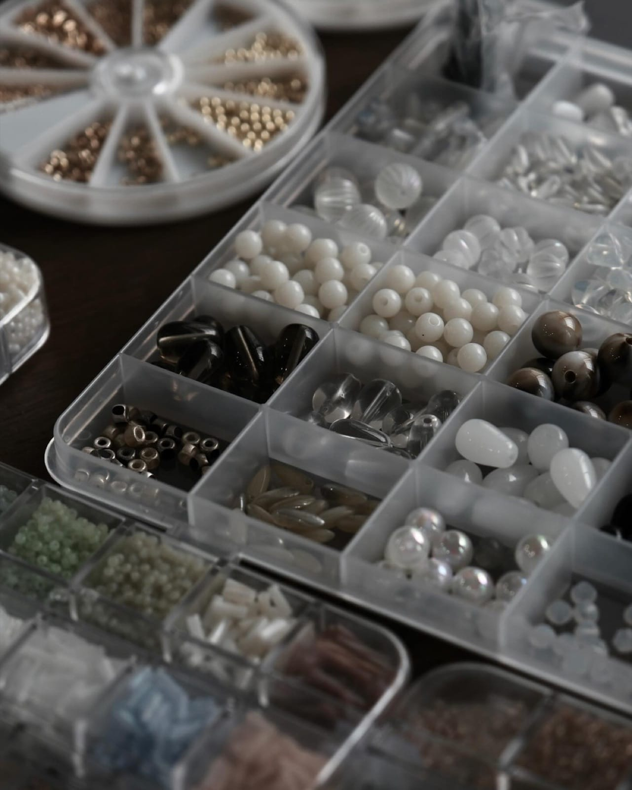
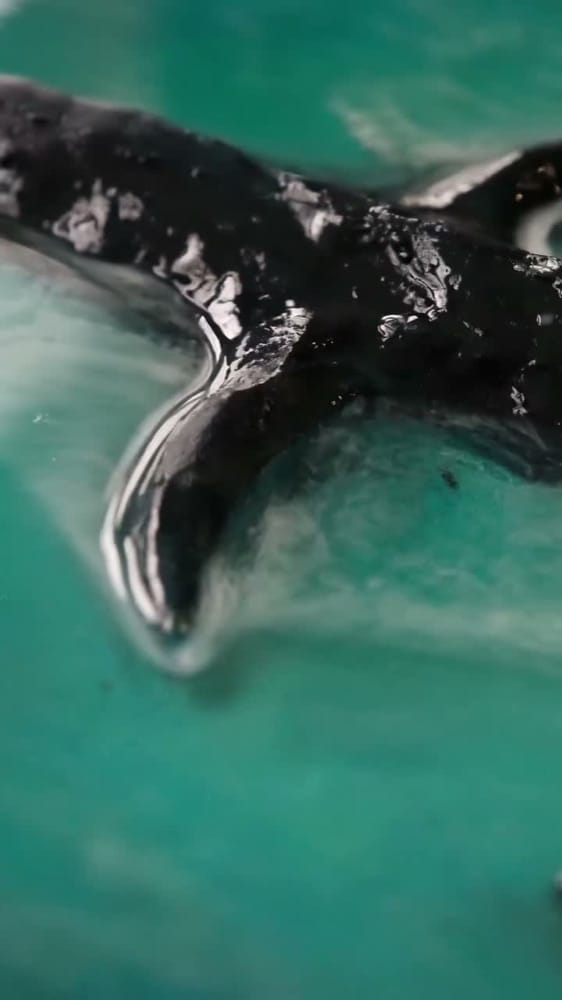
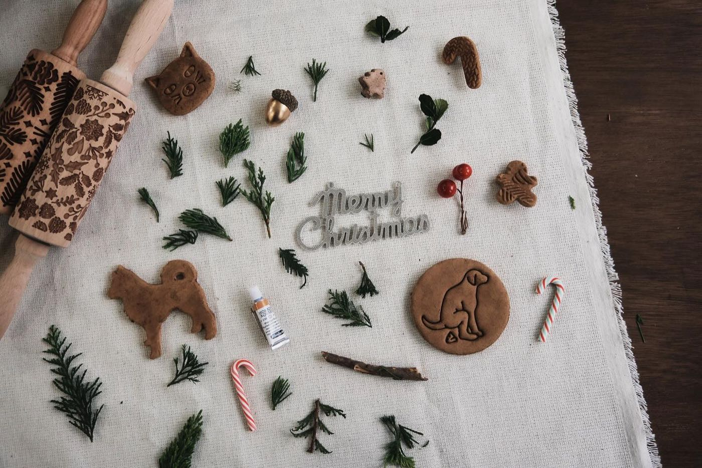
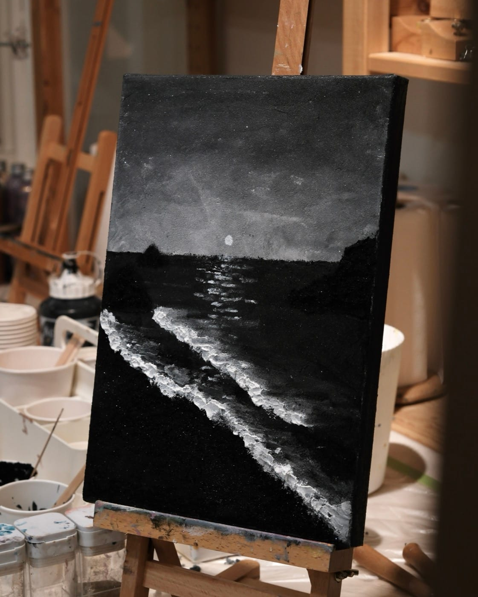
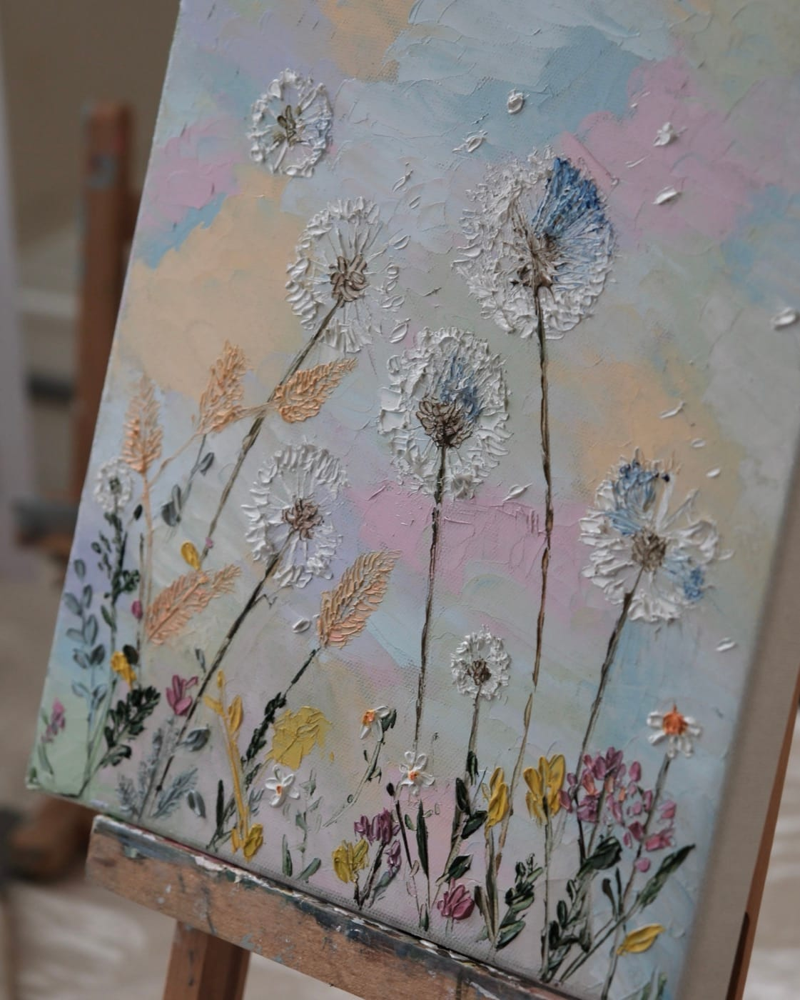
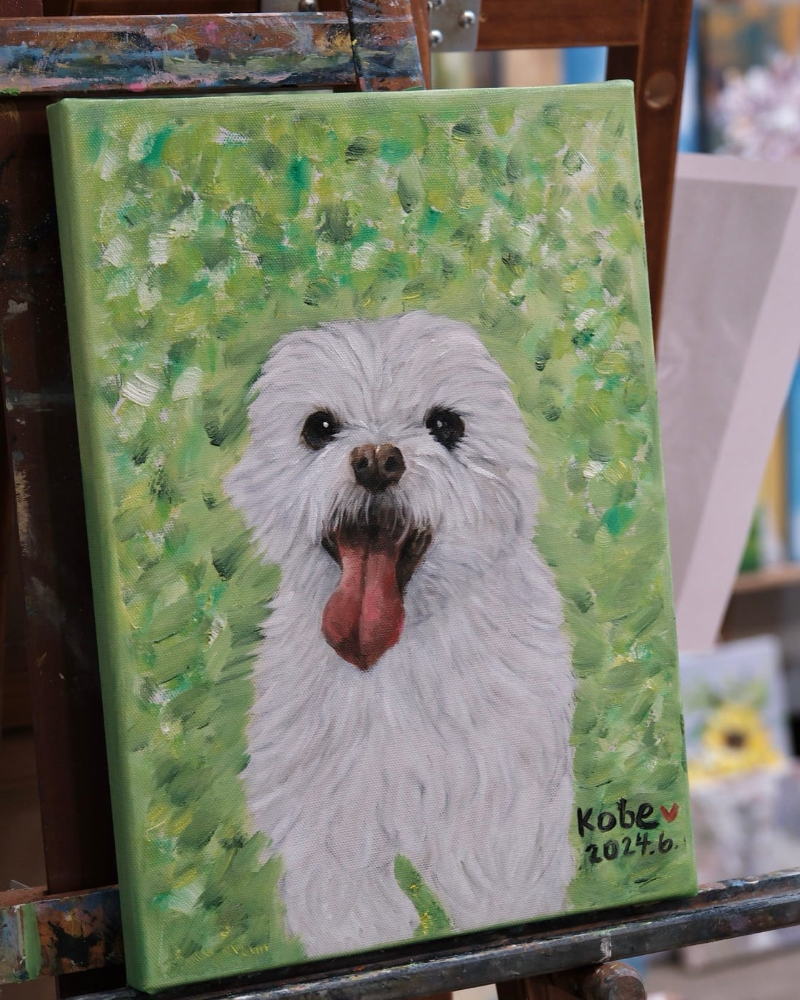
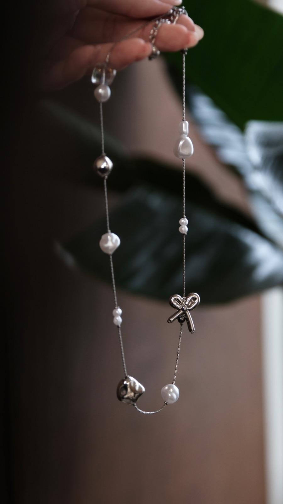
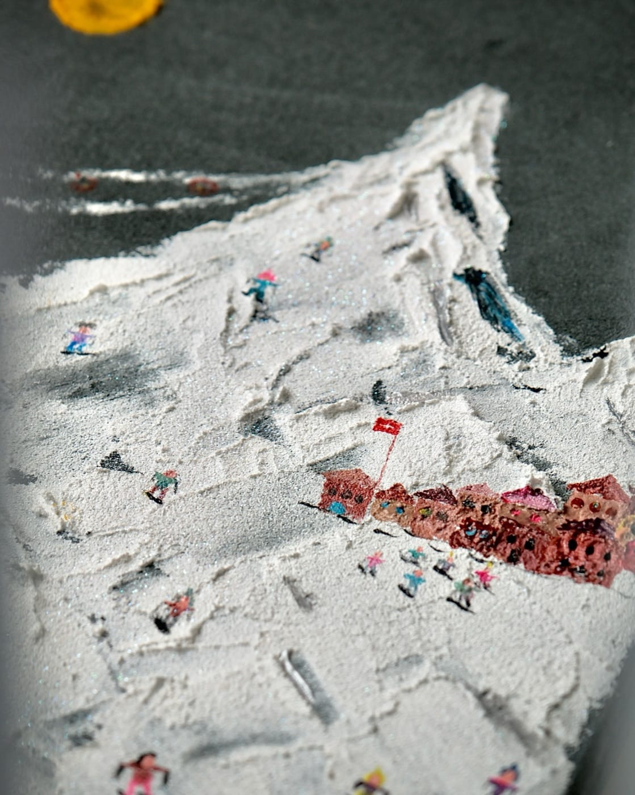

繪畫課程
從肌理砂畫到油畫，不論有沒有基礎，老師都會依你的程度調整教法。選好喜歡的媒材，現場就能完成一幅專屬作品。
每一種媒材都有不同的特性，
一般油畫可以刻畫細節，
石英砂堆疊出粗糙立體的顆粒感，
油畫刮刀留下厚重的筆觸與奶油感質地，
流動畫則交給顏料自己流動、交融，沒有兩幅會長得一樣。
不需要任何基礎，
老師會依照同學狀況調整教法，
協助你完成獨一無二的作品。

為什麼選日宣
自己選圖，獨一無二
不提供固定範本，每一件作品都是你自己挑的圖、自己的故事，不會跟別人撞圖。
課前一對一圖片評估
老師親自評估圖片跟媒材搭不搭，不適合也有辦法調整，不會讓你帶著一張畫不出來的圖現場傻眼。
一堂課完成作品
不用分好幾堂課才看得到成品，當天就能把屬於自己的作品帶回家。
揪團彈性組課
同一時段上課的同學可以各自選不同媒材或圖案，不用整團配合同一張圖。
大型／特殊客製規劃
大幅畫布、特殊材質都能協助規劃訂製、估算完成時間、建議材料與採購，細節先幫你準備好。
新手友善，不需基礎
老師會依照你的程度調整教法，從挑圖到上色全程陪著你完成。
探索我們的課程
每一堂課，我們都鼓勵你帶著自己喜歡的圖或想好的風格來，不是跟著固定範本畫出一樣的作品。預約後、上課前先讓我們了解你想畫的內容，評估適合的媒材與工具；一堂課的時間裡，由老師全程協助，陪你完成真正屬於自己的作品。
 單堂完成
單堂完成01 — Sand Texture
石英砂肌理畫
 單堂完成
單堂完成02 — Palette Knife
刮刀油畫

單堂完成03 — Fluid Art
流動畫

單堂完成04 — Beading
手作串珠項鍊
 單堂完成
單堂完成05 — Custom Portrait
自己帶圖創作
 單堂完成
單堂完成06 — Pet Portrait
寵物油畫
07 — Large Canvas
大幅畫布訂製

客製規劃08 — Custom Material
特殊材質客製

不定期開課09 — Christmas Wreath
聖誕餅乾花圈
怎麼上課
01
線上預約（預約制）
日宣繪畫室採預約制，請先完成線上預約再到現場，沒有預約無法直接上課。選好日期、時段、人數與想上的課程，線上刷卡就完成訂位。
02
準備喜歡的圖，或想好的風格
自己拍的照片、想做的風格都歡迎，不是跟著固定範本畫出一樣的作品。沒有想法也沒關係，直接跟我們聊聊，討論的過程也是認識自己喜好的過程。
03
上課前讓我們了解（建議一週前）
預約完成後，透過 Instagram 私訊傳圖給我們評估，我們會建議適合的媒材與工具，也提早準備顏料與材料。請務必提前討論，不要留到上課當天，現場討論會壓縮實際畫畫的時間。
04
到現場，我們全程協助
老師在旁陪著每一步，一堂課的時間裡完成真正屬於你自己的作品。
圖片不確定適不適合？
不是每張圖都能直接照畫，如果圖片跟你選的媒材不完全搭，我們會協助評估，尋找輔助圖或混合媒材的方式調整課程進程，討論後再決定最合適的做法。
揪團的話建議先幫忙收集大家的圖一起討論，太複雜的選圖問題也歡迎朋友各自私訊討論；同一時段上課的同學也可以各自選擇不同媒材或圖案，不用整團配合同一張圖。
如果是要送朋友的驚喜（對方還不知道要畫畫），建議預約時先告訴我們，並提早 10 分鐘到工作室現場討論圖片，實際安排會依預約完成後我們告知的方式為主。
想做更大尺寸的畫布，或特殊材質？
大幅畫布訂製、特殊材質客製都提供課前評估，告訴我們尺寸、想法與參考圖，我們協助規劃合適的畫布訂製、估算完成時間、建議材料與採購，細節都先幫你準備好，人到現場就能完成作品。
大幅畫布訂製請提前一週預定。
學員作品精選
查看更多學員作品 →



常見問題
沒畫過畫，真的可以嗎？
可以。老師會協助你挑選適合新手、容錯率高、畫面呈現效果最好的參考圖，所以即使沒有基礎，也能在一堂課的時間裡，完成一幅細緻度很高的作品。
一定要自己準備圖嗎？
是的，我們不提供現成範本，自己拍的照片、想做的風格都可以，沒有想法也歡迎直接傳訊息跟我們聊聊，我們會協助評估合適的呈現方式。
什麼時候要開始討論圖片？
建議至少提前一週透過 Instagram 私訊給我們，才能提早準備材料與顏料；當天現場才討論會壓縮實際畫畫的時間，請務必提前。
如果我的圖不適合選的媒材怎麼辦？
不是每張圖都能直接照畫，如果不完全適合，我們會協助評估、尋找輔助圖或混合媒材的方式調整課程進程，討論後再決定最合適的做法。
準備好動手了嗎？
挑一個喜歡的媒材，或直接跟我們聊聊你想畫的圖
材料指南

材料比較
同一座山，三種材料的呈現
油畫＋筆刷、油畫＋刮刀、壓克力＋石英砂＋刮刀，質感差異一次看懂。
閱讀指南